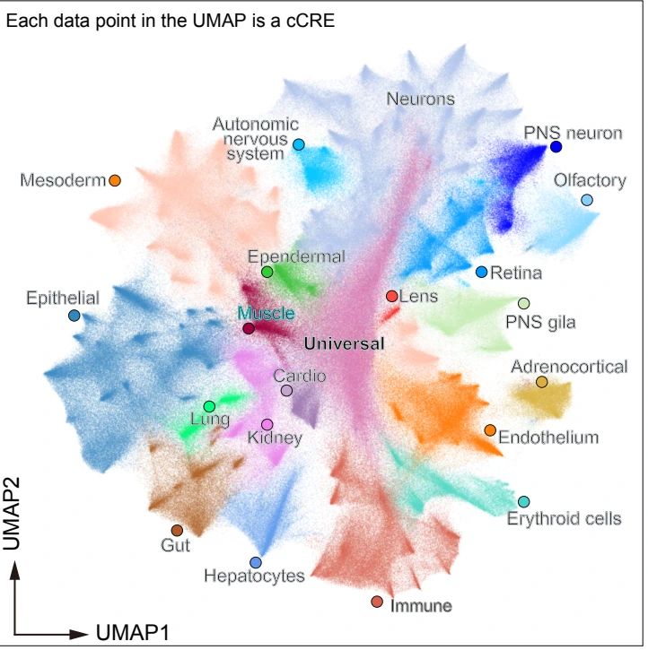

Accessible regulatory landscapes
Cell-type-resolved chromatin accessibility provides a reference for exploring regulatory activity across developing neural, epithelial, mesodermal, hematopoietic and other lineages.
TREE SHREW / CHROMATIN ACCESSIBILITY
Chromatin accessibility during tree shrew organogenesis · 197 cell types
About TOPA
TOPA maps chromatin accessibility during tree shrew organogenesis. Profiles from six whole embryos resolve the cellular landscape and candidate cis-regulatory elements across three developmental stages.


Research context
Cell-type-resolved chromatin accessibility provides a reference for exploring regulatory activity across developing neural, epithelial, mesodermal, hematopoietic and other lineages.
The study uses cell-type-specific ChromBPNet models to investigate DNA sequence features, transcription factor motifs and motif combinations associated with accessibility.
Comparative analyses examine cell-type-dependent cCRE conservation, associations with transposable elements, and shared regulatory features between human and tree shrew.
These sections summarize the study. The tools currently available here are the multi-track genome browser, ATAC GeneScore search and track downloads.
Atlas tools
Compare any of the 197 cell-type signal tracks, query ATAC-derived GeneScores or access the data and methods.
GeneScores are inferred from ATAC accessibility and are not measured RNA expression.
GENOME BROWSER
Shared auto: visible signal tracks use the same y-axis range.
Connecting TS_3.0, gene annotations and the selected cell-type tracks.
Tree shrew · TS_3.0
Transcripts from the supplied TS_3.0 GTF
Cluster CPM bigWigs · supplied values
GENE ACTIVITY / ATAC
Search ATAC-derived GeneScores and compare subtype means and the percentage of cells with signal.
Open this tab to connect the GeneScore matrix.
SUBTYPE PROFILE
| Rank | Subtype | Mean GeneScore0 → maximum for this gene | Cells with signal0–100% |
|---|
No matching subtypes. Clear the filter to see all results.
Each row is one subtype. Bar lengths show the supplied mean GeneScore; percentage bars use a fixed 0–100% scale. Hover over values for full precision.
DATA & METHODS
Current dataset: all 197 cell-type bigWigs exported from the laboratory cluster, aligned to TS_3.0.
Download individual tracks below. Each file uses the TS_3.0 reference.
| Subtype | Cell type | Size | File |
|---|---|---|---|
| C1.1 | Adrenocortical cells | 193.2 MiB | C1.1.bw ↓ |
| C2.1 | Parasympathetic neurons | 54.8 MiB | C2.1.bw ↓ |
| C2.2 | Parasympathetic neurons_AKAP4+ | 74.7 MiB | C2.2.bw ↓ |
| C2.3 | Parasympathetic neurons_GFRAL+ | 56.5 MiB | C2.3.bw ↓ |
| C2.4 | Parasympathetic neurons_TNS3+ | 73.6 MiB | C2.4.bw ↓ |
| C2.5 | Sympathetic neurons | 110.1 MiB | C2.5.bw ↓ |
| C2.6 | Sympathetic neurons_CRYBA2+ | 56.0 MiB | C2.6.bw ↓ |
| C2.7 | Sympathetic neurons_MRAP+ | 72.8 MiB | C2.7.bw ↓ |
| C3.1 | Atrial cardiomyocytes | 88.7 MiB | C3.1.bw ↓ |
| C3.2 | Ventricular cardiomyocytes | 173.8 MiB | C3.2.bw ↓ |
| C4.1 | Choroid plexus | 201.5 MiB | C4.1.bw ↓ |
| C5.1 | Cajal-Retzius cells (BARHL2+) | 101.2 MiB | C5.1.bw ↓ |
| C5.2 | Cajal-Retzius cells (NEUROD6+) | 91.6 MiB | C5.2.bw ↓ |
| C5.3 | Cajal-Retzius cells (NHLH1+) | 56.7 MiB | C5.3.bw ↓ |
| C5.4 | Cajal-Retzius cells (TBR1+) | 101.0 MiB | C5.4.bw ↓ |
| C5.5 | Cajal-Retzius cells (TP73+) | 156.4 MiB | C5.5.bw ↓ |
| C5.6 | Cholinergic neurons | 102.2 MiB | C5.6.bw ↓ |
| C5.7 | CNS_neurons (unknown) | 109.4 MiB | C5.7.bw ↓ |
| C5.8 | GABAergic cortical interneurons (DLX6+) | 104.2 MiB | C5.8.bw ↓ |
| C5.9 | GABAergic cortical interneurons (FOXG1+) | 88.7 MiB | C5.9.bw ↓ |
| C5.10 | GABAergic cortical interneurons (LHX6+) | 83.8 MiB | C5.10.bw ↓ |
| C5.11 | GABAergic cortical interneurons (NKX2-1+) | 101.7 MiB | C5.11.bw ↓ |
| C5.12 | GABAergic cortical interneurons (ZNF503+) | 91.3 MiB | C5.12.bw ↓ |
| C5.13 | GABAergic neurons | 78.3 MiB | C5.13.bw ↓ |
| C5.14 | GABAergic neurons (GATA3+) | 103.7 MiB | C5.14.bw ↓ |
| C5.15 | GABAergic neurons (PAX7+) | 83.1 MiB | C5.15.bw ↓ |
| C5.16 | Glutamatergic neurons | 96.6 MiB | C5.16.bw ↓ |
| C5.17 | Glutamatergic neurons (PITX2+) | 108.1 MiB | C5.17.bw ↓ |
| C5.18 | Glutamatergic neurons (TFAP2D+) | 96.2 MiB | C5.18.bw ↓ |
| C5.19 | Motor neurons | 173.5 MiB | C5.19.bw ↓ |
| C5.20 | Neural progenitor cells (ROR1+) | 159.3 MiB | C5.20.bw ↓ |
| C5.21 | Neurons (NEUROD2+) | 98.3 MiB | C5.21.bw ↓ |
| C5.22 | Purkinje cells | 102.7 MiB | C5.22.bw ↓ |
| C5.23 | Spinal cord dorsal and ventral progenitors | 159.8 MiB | C5.23.bw ↓ |
| C5.24 | Spinal excitatory interneurons (LAMP5+) | 96.3 MiB | C5.24.bw ↓ |
| C5.25 | Spinal excitatory interneurons (NEUROD6+) | 98.3 MiB | C5.25.bw ↓ |
| C5.26 | Spinal inhibitory interneurons (LMX1B+) | 98.0 MiB | C5.26.bw ↓ |
| C5.27 | Thalamic neuronal precursors | 97.3 MiB | C5.27.bw ↓ |
| C6.1 | Definitive erythroblasts | 153.1 MiB | C6.1.bw ↓ |
| C6.2 | Definitive erythroblasts_TMCC2+ | 62.3 MiB | C6.2.bw ↓ |
| C7.1 | Arterial endothelial cells | 168.5 MiB | C7.1.bw ↓ |
| C7.2 | Brain capillary endothelial cells | 195.0 MiB | C7.2.bw ↓ |
| C7.3 | Endocardial cells | 102.3 MiB | C7.3.bw ↓ |
| C7.4 | Glomerular endothelial cells | 174.9 MiB | C7.4.bw ↓ |
| C7.5 | Liver sinusoidal endothelial cells | 106.4 MiB | C7.5.bw ↓ |
| C7.6 | Lymphatic vessel endothelial cells | 187.2 MiB | C7.6.bw ↓ |
| C7.7 | Microvascular endothelial cells | 102.4 MiB | C7.7.bw ↓ |
| C7.8 | Venous and capillary endothelial cells | 184.4 MiB | C7.8.bw ↓ |
| C7.9 | Venous and capillary endothelial cells_NKX2-3+ | 67.9 MiB | C7.9.bw ↓ |
| C7.10 | Venous and capillary endothelial cells_WT1+ | 58.8 MiB | C7.10.bw ↓ |
| C8.1 | Bladder urothelial cells | 88.9 MiB | C8.1.bw ↓ |
| C8.2 | Branchial arch epithelium | 77.3 MiB | C8.2.bw ↓ |
| C8.3 | Branchial arch epithelium_SOX10+ | 110.7 MiB | C8.3.bw ↓ |
| C8.4 | Cochlear hair cells | 8.9 MiB | C8.4.bw ↓ |
| C8.5 | Conjunctival goblet cells | 178.5 MiB | C8.5.bw ↓ |
| C8.6 | Corneal epithelial cells | 163.6 MiB | C8.6.bw ↓ |
| C8.7 | Dental epithelial cells | 78.9 MiB | C8.7.bw ↓ |
| C8.8 | Ependymal cells | 60.8 MiB | C8.8.bw ↓ |
| C8.9 | Epithelial cells_DRD1+ | 25.3 MiB | C8.9.bw ↓ |
| C8.10 | Epithelial cells_FOXA2+ | 83.2 MiB | C8.10.bw ↓ |
| C8.11 | Epithelial cells_HOXB1+ | 66.8 MiB | C8.11.bw ↓ |
| C8.12 | Epithelial cells_METTL24+ | 58.9 MiB | C8.12.bw ↓ |
| C8.13 | Epithelial cells_NKX2-3+ | 73.9 MiB | C8.13.bw ↓ |
| C8.14 | Epithelial cells_PAX6+ | 80.4 MiB | C8.14.bw ↓ |
| C8.15 | Granular keratinocytes | 170.5 MiB | C8.15.bw ↓ |
| C8.16 | Keratinocytes | 185.6 MiB | C8.16.bw ↓ |
| C8.17 | Nonsensory cochlear epithelium | 23.8 MiB | C8.17.bw ↓ |
| C8.18 | Olfactory bulb cells | 89.8 MiB | C8.18.bw ↓ |
| C8.19 | Olfactory epithelial cells | 181.3 MiB | C8.19.bw ↓ |
| C8.20 | Olfactory related cells | 162.4 MiB | C8.20.bw ↓ |
| C8.21 | Olfactory related cells_FEZF2+ | 45.6 MiB | C8.21.bw ↓ |
| C8.22 | Pancreatic cells_CRYBA2+ | 15.9 MiB | C8.22.bw ↓ |
| C8.23 | Parathyroid chief cells | 25.1 MiB | C8.23.bw ↓ |
| C8.24 | Pituitary gland cells | 24.7 MiB | C8.24.bw ↓ |
| C8.25 | Pituitary/Pineal gland progenitors | 61.7 MiB | C8.25.bw ↓ |
| C8.26 | Thymic epithelial cells | 175.2 MiB | C8.26.bw ↓ |
| C8.27 | Thyroid gland cells | 58.1 MiB | C8.27.bw ↓ |
| C8.28 | Tooth junctional epithelium | 20.9 MiB | C8.28.bw ↓ |
| C9.1 | Foregut epithelial cells | 168.6 MiB | C9.1.bw ↓ |
| C9.2 | Goblet cells | 48.6 MiB | C9.2.bw ↓ |
| C9.3 | Gut | 99.8 MiB | C9.3.bw ↓ |
| C9.4 | Midgut_or_Hindgut epithelial cells | 199.1 MiB | C9.4.bw ↓ |
| C10.1 | Hepatocytes | 202.7 MiB | C10.1.bw ↓ |
| C11.1 | Deep-layer neurons | 104.2 MiB | C11.1.bw ↓ |
| C11.2 | Intermediate neuronal progenitors | 89.6 MiB | C11.2.bw ↓ |
| C11.3 | Subplate neurons | 80.1 MiB | C11.3.bw ↓ |
| C11.4 | Upper-layer neurons | 88.3 MiB | C11.4.bw ↓ |
| C12.1 | Collecting duct principal cells | 45.9 MiB | C12.1.bw ↓ |
| C12.2 | Enteroendocrine cells | 52.5 MiB | C12.2.bw ↓ |
| C12.3 | Kidney_Henle and tubule | 59.8 MiB | C12.3.bw ↓ |
| C12.4 | Metanephric mesenchyme | 98.4 MiB | C12.4.bw ↓ |
| C12.5 | Nephron progenitors | 81.2 MiB | C12.5.bw ↓ |
| C12.6 | Neuroendocrine cells_NKX2.1+ | 26.8 MiB | C12.6.bw ↓ |
| C12.7 | Pancreatic acinar cells | 84.5 MiB | C12.7.bw ↓ |
| C12.8 | Pancreatic acinar cells_Onecut1+ | 29.9 MiB | C12.8.bw ↓ |
| C12.9 | Podocytes | 72.7 MiB | C12.9.bw ↓ |
| C12.10 | Posterior intermediate mesoderm | 108.0 MiB | C12.10.bw ↓ |
| C12.11 | Proximal tubule cells | 101.3 MiB | C12.11.bw ↓ |
| C12.12 | Ureteric bud | 112.0 MiB | C12.12.bw ↓ |
| C13.1 | Lung_cells | 170.5 MiB | C13.1.bw ↓ |
| C14.1 | Brain pericytes | 155.4 MiB | C14.1.bw ↓ |
| C14.2 | Chondrocytes (POU3F3+) | 163.3 MiB | C14.2.bw ↓ |
| C14.3 | Chondrocytes (ZIC+) | 187.3 MiB | C14.3.bw ↓ |
| C14.4 | Dermatome | 189.8 MiB | C14.4.bw ↓ |
| C14.5 | Early chondrocytes | 169.7 MiB | C14.5.bw ↓ |
| C14.6 | Facial mesenchyme | 181.6 MiB | C14.6.bw ↓ |
| C14.7 | Fibroblasts | 199.5 MiB | C14.7.bw ↓ |
| C14.8 | Gut mesenchyme (FOXF1+) | 160.8 MiB | C14.8.bw ↓ |
| C14.9 | Hepatic mesenchyme | 163.5 MiB | C14.9.bw ↓ |
| C14.10 | Intermediate mesoderm (KBTBD13+) | 198.2 MiB | C14.10.bw ↓ |
| C14.11 | intermediate mesoderm (Lung mesenchyme?) | 170.8 MiB | C14.11.bw ↓ |
| C14.12 | Intermediate mesoderm (NKX2-3) | 174.7 MiB | C14.12.bw ↓ |
| C14.13 | Intermediate mesoderm (NKX2-5 and TLX1+) | 58.9 MiB | C14.13.bw ↓ |
| C14.14 | Intermediate mesoderm (WT1+) | 185.1 MiB | C14.14.bw ↓ |
| C14.15 | Limb mesenchyme progenitors | 171.6 MiB | C14.15.bw ↓ |
| C14.16 | Lung Fibroblasts? (TBX5 and GRPEL1+) | 167.4 MiB | C14.16.bw ↓ |
| C14.17 | Lung Pericytes (HEYL and TBX5+) | 164.2 MiB | C14.17.bw ↓ |
| C14.18 | Mesodem (DLX+) | 180.1 MiB | C14.18.bw ↓ |
| C14.19 | Mesodem (Undefined_STAB2+) | 188.9 MiB | C14.19.bw ↓ |
| C14.20 | Mesodermal progenitors | 171.5 MiB | C14.20.bw ↓ |
| C14.21 | Mesothelial cell | 192.9 MiB | C14.21.bw ↓ |
| C14.22 | Pre-osteoblasts (SP7+) | 192.4 MiB | C14.22.bw ↓ |
| C14.23 | Sclerotome | 163.9 MiB | C14.23.bw ↓ |
| C14.24 | Smooth muscle cells | 163.4 MiB | C14.24.bw ↓ |
| C15.1 | Myoblasts | 185.0 MiB | C15.1.bw ↓ |
| C15.2 | Myotubes | 218.6 MiB | C15.2.bw ↓ |
| C16.1 | Melanocyte cells | 86.7 MiB | C16.1.bw ↓ |
| C16.2 | Neural crest (PNS glia) | 49.5 MiB | C16.2.bw ↓ |
| C16.3 | Olfactory ensheathing cells | 61.9 MiB | C16.3.bw ↓ |
| C16.4 | Satellite glial cells | 159.9 MiB | C16.4.bw ↓ |
| C16.5 | Schwann cells | 187.3 MiB | C16.5.bw ↓ |
| C16.6 | Schwann cells_HAND2+ | 165.5 MiB | C16.6.bw ↓ |
| C16.7 | Schwann cells_NKX2-2+ | 173.2 MiB | C16.7.bw ↓ |
| C17.1 | Dorsal root ganglion neurons | 236.6 MiB | C17.1.bw ↓ |
| C17.2 | Enteric neurons | 59.5 MiB | C17.2.bw ↓ |
| C17.3 | Neural crest_PNS neurons | 66.7 MiB | C17.3.bw ↓ |
| C17.4 | Otic sensory neurons | 83.2 MiB | C17.4.bw ↓ |
| C18.1 | Anterior floor plate | 62.5 MiB | C18.1.bw ↓ |
| C18.2 | Astrocytes | 105.0 MiB | C18.2.bw ↓ |
| C18.3 | Cerebellum-related cells | 100.7 MiB | C18.3.bw ↓ |
| C18.4 | Diencephalon (Uncertain?) | 99.8 MiB | C18.4.bw ↓ |
| C18.5 | Dorsal telencephalon | 87.9 MiB | C18.5.bw ↓ |
| C18.6 | Floorplate | 103.7 MiB | C18.6.bw ↓ |
| C18.7 | Forebrain-Midbrain boundary | 94.1 MiB | C18.7.bw ↓ |
| C18.8 | Hindbrain | 93.7 MiB | C18.8.bw ↓ |
| C18.9 | Hypothalamus | 97.6 MiB | C18.9.bw ↓ |
| C18.10 | Hypothalamus (DLX2 and NKX2-1+) | 90.4 MiB | C18.10.bw ↓ |
| C18.11 | Midbrain | 86.9 MiB | C18.11.bw ↓ |
| C18.12 | Midbrain-hindbrain boundary | 89.3 MiB | C18.12.bw ↓ |
| C18.13 | Neuron (DLX1 and DLX2+) | 95.2 MiB | C18.13.bw ↓ |
| C18.14 | Neuron (EBF2 and EBF3+) | 76.7 MiB | C18.14.bw ↓ |
| C18.15 | Neuron (PAX2 and PAX5+) | 75.0 MiB | C18.15.bw ↓ |
| C18.16 | Neuron (undefined_SIX3+) | 91.9 MiB | C18.16.bw ↓ |
| C18.17 | Neuron (unknown) | 101.0 MiB | C18.17.bw ↓ |
| C18.18 | Posterior roof plate | 65.9 MiB | C18.18.bw ↓ |
| C18.19 | Spinal cord | 95.4 MiB | C18.19.bw ↓ |
| C18.20 | Telencephalon | 97.7 MiB | C18.20.bw ↓ |
| C19.1 | Olfactory_sensory_neurons | 169.7 MiB | C19.1.bw ↓ |
| C20.1 | Oligodendrocyte cells | 89.1 MiB | C20.1.bw ↓ |
| C21.1 | Otic_cells | 172.6 MiB | C21.1.bw ↓ |
| C22.1 | Primitive erythroid cells | 46.9 MiB | C22.1.bw ↓ |
| C23.1 | Amacrine/Horizontal precursor cells | 52.6 MiB | C23.1.bw ↓ |
| C23.2 | Cone precursor cells | 53.0 MiB | C23.2.bw ↓ |
| C23.3 | Eye field | 98.6 MiB | C23.3.bw ↓ |
| C23.4 | Horizontal precursor cells | 44.0 MiB | C23.4.bw ↓ |
| C23.5 | Lens epithelial cells | 75.5 MiB | C23.5.bw ↓ |
| C23.6 | Naive retinal progenitor cells | 101.3 MiB | C23.6.bw ↓ |
| C23.7 | Photoreceptor precursor cells | 46.7 MiB | C23.7.bw ↓ |
| C23.8 | Retinal ganglion cells | 161.3 MiB | C23.8.bw ↓ |
| C23.9 | Retinal ganglion cells_OPN4+ | 26.0 MiB | C23.9.bw ↓ |
| C23.10 | Retinal ganglion cells_TBX5+ | 22.9 MiB | C23.10.bw ↓ |
| C23.11 | Retinal ganglion progenitor cells | 60.3 MiB | C23.11.bw ↓ |
| C23.12 | Retinal pigment cells | 102.7 MiB | C23.12.bw ↓ |
| C23.13 | Retinal progenitor cells | 96.2 MiB | C23.13.bw ↓ |
| C24.1 | Activated T cells | 68.8 MiB | C24.1.bw ↓ |
| C24.2 | B cells | 64.0 MiB | C24.2.bw ↓ |
| C24.3 | Border-associated macrophages | 105.9 MiB | C24.3.bw ↓ |
| C24.4 | Common lymphoid progenitor | 87.1 MiB | C24.4.bw ↓ |
| C24.5 | Common myeloid progenitors | 76.6 MiB | C24.5.bw ↓ |
| C24.6 | Conventional dendritic cells | 17.1 MiB | C24.6.bw ↓ |
| C24.7 | Eosinophils | 26.2 MiB | C24.7.bw ↓ |
| C24.8 | Erythroid progenitor | 109.1 MiB | C24.8.bw ↓ |
| C24.9 | Granulocytes | 45.5 MiB | C24.9.bw ↓ |
| C24.10 | HSPCs | 90.2 MiB | C24.10.bw ↓ |
| C24.11 | Kupffer cells | 98.9 MiB | C24.11.bw ↓ |
| C24.12 | Mast cells | 29.8 MiB | C24.12.bw ↓ |
| C24.13 | Megakaryocyte-erythroid progenitor | 67.2 MiB | C24.13.bw ↓ |
| C24.14 | Megakaryocytes | 82.3 MiB | C24.14.bw ↓ |
| C24.15 | Microglia | 59.4 MiB | C24.15.bw ↓ |
| C24.16 | Monocytes | 82.2 MiB | C24.16.bw ↓ |
| C24.17 | Monocytic myeloid-derived suppressor cells | 51.7 MiB | C24.17.bw ↓ |
| C24.18 | NK cells | 60.4 MiB | C24.18.bw ↓ |
| C24.19 | Osteoclasts | 22.7 MiB | C24.19.bw ↓ |
| C24.20 | Plasmacytoid dendritic cells | 20.4 MiB | C24.20.bw ↓ |
| C24.21 | Pre-B cells | 89.0 MiB | C24.21.bw ↓ |
| C24.22 | Pre-T cells | 53.5 MiB | C24.22.bw ↓ |
| C24.23 | T cells | 72.4 MiB | C24.23.bw ↓ |
Gene names and transcript structures come from the supplied tree shrew annotation. Where a gene symbol maps to multiple loci, choose a specific result from the search suggestions. All 197 tracks are available below. Names come from the supplied Treeshrew_cell_type_define.csv.